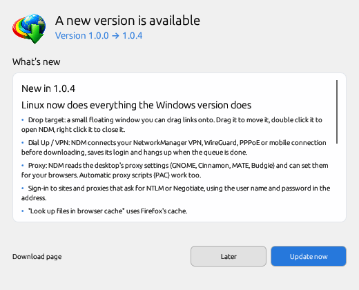

NDM checks GitHub for a newer release every two weeks, and whenever you ask it to.

Your downloads and settings are kept. On Windows, an installed NDM runs the new setup; a copy run from a folder replaces its own ndm.exe. On Linux, the AppImage replaces itself and the .tar.gz folder updates in place; an NDM installed from the .deb or .rpm installs the new package with your package manager, after the desktop asks for your password.
The Windows setup writes its log to %TEMP%\NDM-Setup.log. You can always download the latest version from the release page and install it over the old one.